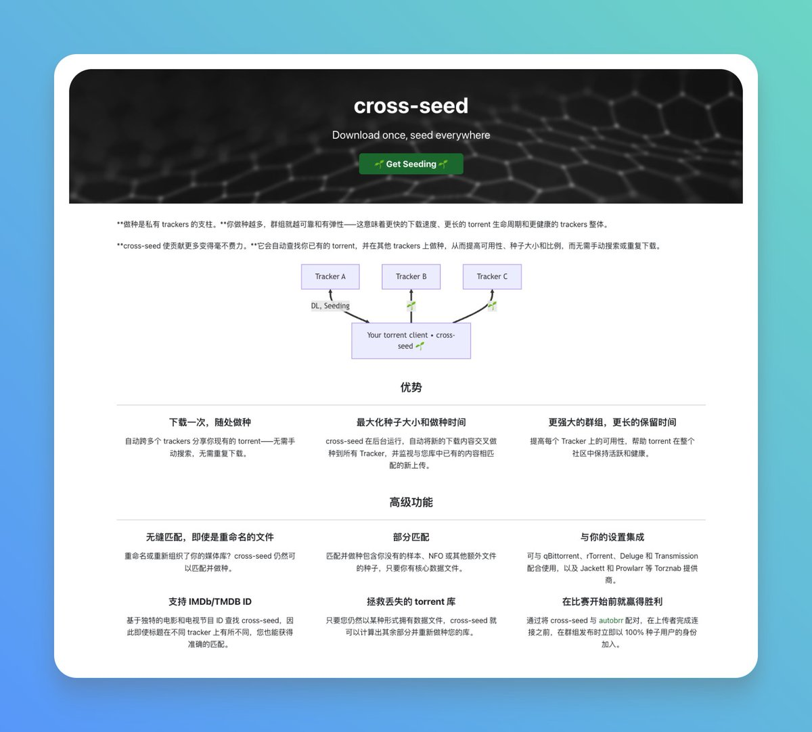

asuka 🏳️⚧️🍥🏳️🌈🏴
@H4lf_L13_F8964
RT @GitHub_Daily: 大家平时习惯用 BT 下载，下完即走。而在进阶的 PT（私有种子）圈子里，规则完全不同：必须贡献上传量才能生存，一旦“分享率”不达标就会被封号。
为了刷数据保号，我们常想把同一份资源发布到多个站点，但手动一个个去搜种、校验，效率极低。
恰…

GitHubDaily
@GitHub_Daily
大家平时习惯用 BT 下载，下完即走。而在进阶的 PT（私有种子）圈子里，规则完全不同：必须贡献上传量才能生存，一旦“分享率”不达标就会被封号。
为了刷数据保号，我们常想把同一份资源发布到多个站点，但手动一个个去搜种、校验，效率极低。
恰巧发现 cross-seed https://t.co/MfagiQS4vz